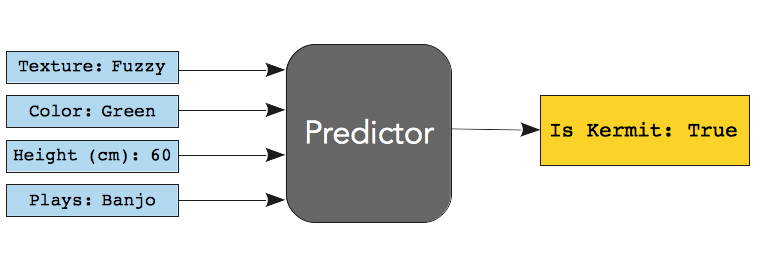

Deployable Predictors
What does a data scientist produce, exactly?
The field of data science hasn't coalesced around a single answer yet, but here's what I assert:
Data scientists produce deployable predictors that make a business money.
The "making money" part is self-explanatory, but what is a "deployable predictor"?
Let's unpack what this means.
What is a deployable predictor?
Something deployable is:
Code that satifies quality and monitoring standards for mission-critical software.
Most software developers are familiar with these processes and standards. This includes the whole rigamarole of unit test, user acceptance testing, continuous integration, performance monitoring, submitting to the gentle tyranny of PEP 8 standards, and so on.
A predictor is:
A piece of code that accepts multiple inputs (data), and returns a single prediction.
For example, imagine a predictor that accepts inputs about a Muppet's size, color, texture, and banjo playing skills, and returns a prediction about whether that Muppet is, in fact, Kermit the Frog.

The predictor is a black box. It's not a coincidence that the predictor in the diagram above is (a dark grey that graphic designers recommend using instead of) black. Inside the black box might be a neural network, a set of hard coded if/then/else statements, or an army of hyper-intelligent squirrels.
The black box's contents shouldn't matter to all the other software it interacts with. We should be able to replace the squirrels with a neural network without modifying any of the predictor's up- or down-stream dependencies. We should be able to deploy updates to the model without also redeploying everything it touches. This seems kind of obvious from a software architecture standpoint, but it's easy to forget.
Simple to say, but hard to do
It is easy to forget that a predictor should be a black box, because we humans are extremely interested in all the details of how a machine learning algorithm works.
Software developers' curiousity about the predictor can inadvertantly start to migrate some of its logic to the up- or down-stream applications they maintain. While subtle, this error can really, really mess things up.
I have a harrowing tale about making that mistake myself. Maybe I'll write about it here, someday!
Why does the definition matter?
There's still a lot of confusion about what you get for your money when you hire a data scientist.
While we can, and often do, pinch hit as data engineers, business strategists, data analysts, and reporting dashboard cowboys, we leave a lot of value on the table if that's all we do.
In my view, data scientists are uniquely equipped not just to make predictions, but to embed predictive capabilities in a company's existing code base.
If you're interested in hiring a data scientist that fits this post's definition of the job, reach out to me at ruhlen (at) gmail (dot) com.